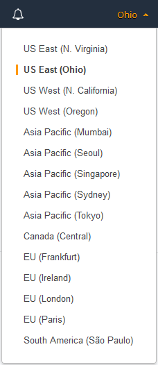

Launching an Instance Using the Launch Instance Wizard
Before you launch your instance, be sure that you are set up. For more information, see Setting Up with Amazon EC2.
Important
When you launch an instance that's not within the AWS Free Tier, you are charged for the time that the instance is running, even if it remains idle.
Launching Your Instance from an AMI
When you launch an instance, you must select a configuration, known as an Amazon Machine Image (AMI). An AMI contains the information required to create a new instance. For example, an AMI might contain the software required to act as a web server: for example, Linux, Apache, and your website.
Tip
To ensure faster instance launches, break up large requests into smaller batches. For example, create five separate launch requests for 100 instances each instead of one launch request for 500 instances.
To launch an instance
-
Open the Amazon EC2 console at https://console.aws.amazon.com/ec2/.
-
In the navigation bar at the top of the screen, the current region is displayed. Select the region for the instance. This choice is important because some Amazon EC2 resources can be shared between regions, while others can't. Select the region that meets your needs. For more information, see Resource Locations.
 -
From the Amazon EC2 console dashboard, choose Launch Instance.
-
On the Choose an Amazon Machine Image (AMI) page, choose an AMI as follows:
-
Select the type of AMI to use in the left pane:
- Quick Start
-
A selection of popular AMIs to help you get started quickly. To select an AMI that is eligible for the free tier, choose Free tier only in the left pane. These AMIs are marked Free tier eligible.
- My AMIs
-
The private AMIs that you own, or private AMIs that have been shared with you. To view AMIs shared with you, choose Shared with me in the left pane.
- AWS Marketplace
-
An online store where you can buy software that runs on AWS, including AMIs. For more information about launching an instance from the AWS Marketplace, see Launching an AWS Marketplace Instance.
- Community AMIs
-
The AMIs that AWS community members have made available for others to use. To filter the list of AMIs by operating system, choose the appropriate check box under Operating system. You can also filter by architecture and root device type.
-
Check the Root device type listed for each AMI. Notice which AMIs are the type that you need, either
ebs(backed by Amazon EBS) orinstance-store(backed by instance store). For more information, see Storage for the Root Device. -
Check the Virtualization type listed for each AMI. Notice which AMIs are the type that you need, either
hvmorparavirtual. For example, some instance types require HVM. For more information, see Linux AMI Virtualization Types. -
Choose an AMI that meets your needs, and then choose Select.
-
-
On the Choose an Instance Type page, select the hardware configuration and size of the instance to launch. Larger instance types have more CPU and memory. For more information, see Instance Types.
To remain eligible for the free tier, choose the t2.micro instance type. For more information, see Burstable Performance Instances.
By default, the wizard displays current generation instance types, and selects the first available instance type based on the AMI that you selected. To view previous generation instance types, choose All generations from the filter list.
Note
To set up an instance quickly for testing purposes, choose Review and Launch to accept the default configuration settings, and launch your instance. Otherwise, to configure your instance further, choose Next: Configure Instance Details.
-
On the Configure Instance Details page, change the following settings as necessary (expand Advanced Details to see all the settings), and then choose Next: Add Storage:
-
Number of instances: Enter the number of instances to launch.
-
(Optional) To help ensure that you maintain the correct number of instances to handle demand on your application, you can choose Launch into Auto Scaling Group to create a launch configuration and an Auto Scaling group. Auto Scaling scales the number of instances in the group according to your specifications. For more information, see the Amazon EC2 Auto Scaling User Guide.
-
Purchasing option: Select Request Spot instances to launch a Spot Instance. This adds and removes options from this page. Set your maximum price, and optionally update the request type, interruption behavior, and request validity. For more information, see Creating a Spot Instance Request.
-
Network: Select the VPC, or to create a new VPC, choose Create new VPC to go the Amazon VPC console. When you have finished, return to the wizard and choose Refresh to load your VPC in the list.
-
Subnet: Select the subnet into which to launch your instance. You can select No preference to let AWS choose a default subnet in any Availability Zone. To create a new subnet, choose Create new subnet to go to the Amazon VPC console. When you are done, return to the wizard and choose Refresh to load your subnet in the list.
-
Auto-assign Public IP: Specify whether your instance receives a public IPv4 address. By default, instances in a default subnet receive a public IPv4 address and instances in a nondefault subnet do not. You can select Enable or Disable to override the subnet's default setting. For more information, see Public IPv4 Addresses and External DNS Hostnames.
-
Auto-assign IPv6 IP: Specify whether your instance receives an IPv6 address from the range of the subnet. Select Enable or Disable to override the subnet's default setting. This option is only available if you've associated an IPv6 CIDR block with your VPC and subnet. For more information, see Your VPC and Subnets in the Amazon VPC User Guide.
-
IAM role: Select an AWS Identity and Access Management (IAM) role to associate with the instance. For more information, see IAM Roles for Amazon EC2.
-
Shutdown behavior: Select whether the instance should stop or terminate when shut down. For more information, see Changing the Instance Initiated Shutdown Behavior.
-
Enable termination protection: To prevent accidental termination, select this check box. For more information, see Enabling Termination Protection for an Instance.
-
Monitoring: Select this check box to enable detailed monitoring of your instance using Amazon CloudWatch. Additional charges apply. For more information, see Monitoring Your Instances Using CloudWatch.
-
EBS-Optimized instance: An Amazon EBS-optimized instance uses an optimized configuration stack and provides additional, dedicated capacity for Amazon EBS I/O. If the instance type supports this feature, select this check box to enable it. Additional charges apply. For more information, see Amazon EBS–Optimized Instances.
-
Tenancy: If you are launching your instance into a VPC, you can choose to run your instance on isolated, dedicated hardware (Dedicated) or on a Dedicated Host (Dedicated host). Additional charges may apply. For more information, see Dedicated Instances and Dedicated Hosts.
-
T2/T3 Unlimited: Select this check box to enable applications to burst beyond the baseline for as long as needed. Additional charges may apply. For more information, see Burstable Performance Instances.
-
Network interfaces: If you selected a specific subnet, you can specify up to two network interfaces for your instance:
-
For Network Interface, select New network interface to let AWS create a new interface, or select an existing, available network interface.
-
For Primary IP, enter a private IPv4 address from the range of your subnet, or leave Auto-assign to let AWS choose a private IPv4 address for you.
-
For Secondary IP addresses, choose Add IP to assign more than one private IPv4 address to the selected network interface.
-
(IPv6-only) For IPv6 IPs, choose Add IP, and enter an IPv6 address from the range of the subnet, or leave Auto-assign to let AWS choose one for you.
-
Choose Add Device to add a secondary network interface. A secondary network interface can reside in a different subnet of the VPC, provided it's in the same Availability Zone as your instance.
For more information, see Elastic Network Interfaces. If you specify more than one network interface, your instance cannot receive a public IPv4 address. Additionally, if you specify an existing network interface for eth0, you cannot override the subnet's public IPv4 setting using Auto-assign Public IP. For more information, see Assigning a Public IPv4 Address During Instance Launch.
-
-
Kernel ID: (Only valid for paravirtual (PV) AMIs) Select Use default unless you want to use a specific kernel.
-
RAM disk ID: (Only valid for paravirtual (PV) AMIs) Select Use default unless you want to use a specific RAM disk. If you have selected a kernel, you may need to select a specific RAM disk with the drivers to support it.
-
Placement group: A placement group determines the placement strategy of your instances. Select an existing placement group, or create a new one. This option is only available if you've selected an instance type that supports placement groups. For more information, see Placement Groups.
-
User data: You can specify user data to configure an instance during launch, or to run a configuration script. To attach a file, select the As file option and browse for the file to attach.
-
-
The AMI you selected includes one or more volumes of storage, including the root device volume. On the Add Storage page, you can specify additional volumes to attach to the instance by choosing Add New Volume. You can configure the following options for each volume:
-
Type: Select instance store or Amazon EBS volumes to associate with your instance. The type of volume available in the list depends on the instance type you've chosen. For more information, see Amazon EC2 Instance Store and Amazon EBS Volumes.
-
Device: Select from the list of available device names for the volume.
-
Snapshot: Enter the name or ID of the snapshot from which to restore a volume. You can also search for public snapshots by typing text into the Snapshot field. Snapshot descriptions are case-sensitive.
-
Size: For Amazon EBS-backed volumes, you can specify a storage size. Even if you have selected an AMI and instance that are eligible for the free tier, to stay within the free tier, you must keep under 30 GiB of total storage.
Note
Linux AMIs require GPT partition tables and GRUB 2 for boot volumes 2 TiB (2048 GiB) or larger. Many Linux AMIs today use the MBR partitioning scheme, which only supports up to 2047 GiB boot volumes. If your instance does not boot with a boot volume that is 2 TiB or larger, the AMI you are using may be limited to a 2047 GiB boot volume size. Non-boot volumes do not have this limitation on Linux instances.
Note
If you increase the size of your root volume at this point (or any other volume created from a snapshot), you need to extend the file system on that volume in order to use the extra space. For more information about extending your file system after your instance has launched, see Modifying the Size, IOPS, or Type of an EBS Volume on Linux.
-
Volume Type: For Amazon EBS volumes, select either a General Purpose SSD, Provisioned IOPS SSD, or Magnetic volume. For more information, see Amazon EBS Volume Types.
Note
If you select a Magnetic boot volume, you'll be prompted when you complete the wizard to make General Purpose SSD volumes the default boot volume for this instance and future console launches. (This preference persists in the browser session, and does not affect AMIs with Provisioned IOPS SSD boot volumes.) We recommended that you make General Purpose SSD volumes the default because they provide a much faster boot experience and they are the optimal volume type for most workloads. For more information, see Amazon EBS Volume Types.
Note
Some AWS accounts created before 2012 might have access to Availability Zones in us-west-1 or ap-northeast-1 that do not support Provisioned IOPS SSD (
io1) volumes. If you are unable to create anio1volume (or launch an instance with anio1volume in its block device mapping) in one of these regions, try a different Availability Zone in the region. You can verify that an Availability Zone supportsio1volumes by creating a 4 GiBio1volume in that zone. -
IOPS: If you have selected a Provisioned IOPS SSD volume type, then you can enter the number of I/O operations per second (IOPS) that the volume can support.
-
Delete on Termination: For Amazon EBS volumes, select this check box to delete the volume when the instance is terminated. For more information, see Preserving Amazon EBS Volumes on Instance Termination.
-
Encrypted: Select a value in this menu to configure the encryption state of new Amazon EBS volumes. The default value is Not encrypted. Additional options include using your AWS managed customer master key (CMK) or a customer-managed CMK that you have created. Available keys are listed in the menu. You can also hover over the field and paste the Amazon Resource Name (ARN) of a key directly into the text box. For information about creating customer-managed CMKs, see AWS Key Management Service Developer Guide.
Note
Encrypted volumes may only be attached to supported instance types.
When done configuring your volumes, choose Next: Add Tags.
-
-
On the Add Tags page, specify tags by providing key and value combinations. You can tag the instance, the volumes, or both. For Spot Instances, you can tag the Spot Instance request only. Choose Add another tag to add more than one tag to your resources. Choose Next: Configure Security Group when you are done.
-
On the Configure Security Group page, use a security group to define firewall rules for your instance. These rules specify which incoming network traffic is delivered to your instance. All other traffic is ignored. (For more information about security groups, see Amazon EC2 Security Groups for Linux Instances.) Select or create a security group as follows, and then choose Review and Launch.
-
To select an existing security group, choose Select an existing security group, and select your security group.
Note
(Optional) You can't edit the rules of an existing security group, but you can copy them to a new group by choosing Copy to new. Then you can add rules as described in the next step.
-
To create a new security group, choose Create a new security group. The wizard automatically defines the launch-wizard-x security group and creates an inbound rule to allow you to connect to your instance over SSH (port 22).
-
You can add rules to suit your needs. For example, if your instance is a web server, open ports 80 (HTTP) and 443 (HTTPS) to allow internet traffic.
To add a rule, choose Add Rule, select the protocol to open to network traffic, and then specify the source. Choose My IP from the Source list to let the wizard add your computer's public IP address. However, if you are connecting through an ISP or from behind your firewall without a static IP address, you need to find out the range of IP addresses used by client computers.
Warning
Rules that enable all IP addresses (
0.0.0.0/0) to access your instance over SSH or RDP are acceptable for this short exercise, but are unsafe for production environments. You should authorize only a specific IP address or range of addresses to access your instance.
-
-
On the Review Instance Launch page, check the details of your instance, and make any necessary changes by choosing the appropriate Edit link.
When you are ready, choose Launch.
-
In the Select an existing key pair or create a new key pair dialog box, you can choose an existing key pair, or create a new one. For example, choose Choose an existing key pair, then select the key pair you created when getting set up.
To launch your instance, select the acknowledgment check box, then choose Launch Instances.
Important
If you choose the Proceed without key pair option, you won't be able to connect to the instance unless you choose an AMI that is configured to allow users another way to log in.
-
(Optional) You can create a status check alarm for the instance (additional fees may apply). (If you're not sure, you can always add one later.) On the confirmation screen, choose Create status check alarms and follow the directions. For more information, see Creating and Editing Status Check Alarms.
-
If the instance fails to launch or the state immediately goes to
terminatedinstead ofrunning, see Troubleshooting Instance Launch Issues.